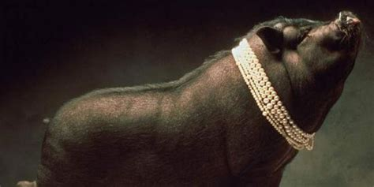

Babi Ngepet is a swine demon as per Javanese mythology and a bore demon as per Indonesian mythology which is believed to be one of the most hostile demons as per demonology. Demon Babi Ngepet is a creature that is believed to practice black magic rituals to help people become rich instantly, as per the local myths and in exchange ask the people to sacrifice their humanity. This makes them sacrifice their identity and gain the shape of a boar like demon and the transformation from human being to an animal is similar to concept of shapeshifter werewolf popular in the western countries.
The transformation of the demon is linked to the legend where a man covered with black robes was astoundingly turned into a bore demon. Once the human-animal transformation was complete, the man roamed all across the village. He used to scratch is body against the walls, doors and the entire village area until all the riches of the folks started disappearing including items like gold, jewelry or money. The demon had gained the power to magically accumulate all the riches as well as distribute the same to the person who surrenders themselves to the ancient demon. On successful completion of the mission, the demon would silently return to his home and gain the shape of a normal human being and all the black robes would be filled with money, gold and other riches. Local folklore says that the practitioner of Babi Ngepet black magic always needs some additional support whose main task would be to guard the area of practice with a lit candle floating across the water basin. The flame of the candle gives indications about the current activities of the demon such as if it is shaking or fading then that would indicate that the demon is caught in some activities of the villages or have transformed back into the human shape. It was due to this traditional lore many villagers often took vengeance from any wandering bore they would find roaming around the village area especially the people from the Javanese mythology.